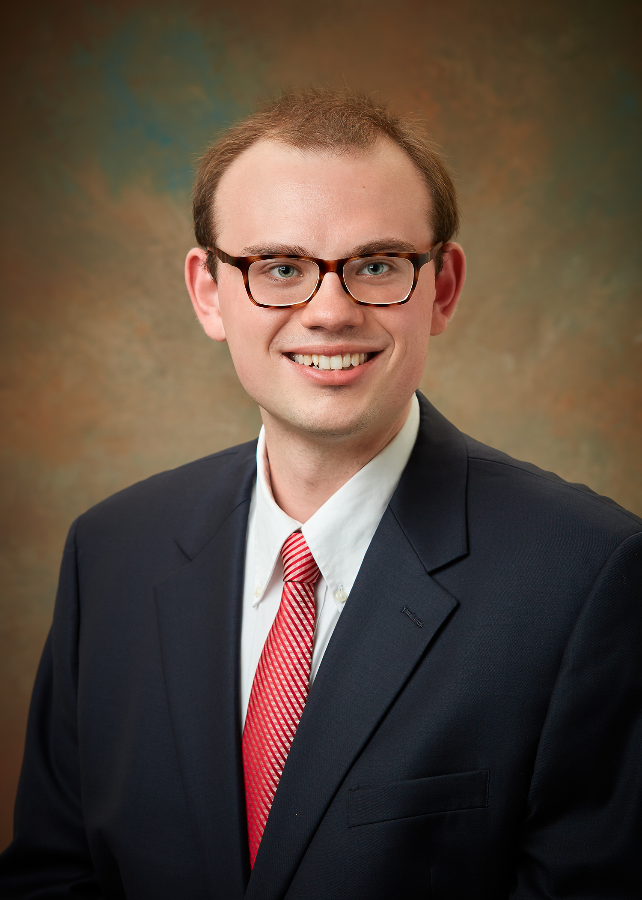

|  |
Shaun Evans
Doctoral candidate in the History of Christianity I am a fourth year doctoral candidate in historical theology at the University of Notre Dame. My research focuses on medieval scholastic accounts of Christ's human knowledge, including their modern reception. I am a Presidential Fellow at the University of Notre Dame and a Lilly Graduate Fellow at Valparaiso University. |
Latin, Ancient Greek, French, Italian, German
Foundations of Theology, Fall 2024 (instructor of record, upcoming)
The first university requirement in theology, designed to introduce students to the discipline of Catholic theology by way of a survey of theology's two principal sources, Scipture and Tradition. Includes a unit on the nature of theology, an Old Testament survey, a New Testament survey, and a unit on the theology of the early Church.
The Dogma of the Immaculate Conception, Spring 2023 (teaching assistant)
A course on the historical development and theological significance of the dogma of Mary's immaculate conception, fulfilling the second university requirement in theology (a course on the development of doctrine). Graded reading quizzes and met with students in preparation for essays and exams.
Christian Traditions I, Fall 2022 and Fall 2021 (teaching assistant)
A survey of patristic and medieval theology, required for majors. Delivered one class lecture each semester and graded weekly writing assignments.
Eastern Churches: Theology and History, Spring 2022 (teaching assistant)
A survey of the theology and history of the Eastern Churches, from antiquity to the present day, covering Eastern Catholic, Eastern Orthodox, and Oriental Orthodox traditions. Fulfills university requirement for a second-level theology course. Delivered one class lecture, participated in weekly discussions, and graded weekly writing assignments.
“Manifesting the Divine Goodness: Aquinas's Doxological Soteriology.” Presented at the 47th international Patristic, Medieval, and Renaissance Conference at Villanova University (October 2022).
Lilly Graduate Fellows Program, Valparaiso University (Summer 2021-Present)
Awarded every two years to ten doctoral students with academic promise who are interested in teaching at a church-affiliated institution. The three-year program includes annual summer conferences and alternating weekly mentorship phone calls and online book colloquia. $3,000 annual stipend for three years.
Presidential Fellowship (Fall 2020-Present)
Awarded annually to several incoming graduate students at the University of Notre Dame for academic excellence. Carries an increased stipend.
Dean' Fellowship (Fall 2018-Spring 2020)
Awarded annually to approximately fifteen incoming graduate students at the University of Notre Dame for academic excellence. Carries an increased stipend.
Rev. Joseph H. Cavanaugh, C.S.C. Award (Spring 2018)
One of two awards bestowed upon a graduating Theology major at the University of Notre Dame for evidencing qualities of personal character and academic achievement.
Theology-Philosophy Joint Major Conferred with Honors (Spring 2018)
Helen Hritzu and Jewell Erickson Award for Excellence in Classics (Spring 2018)
Bestowed upon five graduating Classics majors at the University of Notre Dame for excellence in Classics.
Phi Beta Kappa (ΦΒΚ) Honor Society, University of Notre Dame Chapter (Spring 2018)
Glynn Family Honors Program (Spring 2018)
Structured as a minor, the program involves eight honors courses in literature, theology, philosophy, mathematics, and science, and requires a senior thesis.
Summa cum Laude (B.A., Spring 2018)
Awarded for graduating in the top 5% of the College of Arts and Letters at Notre Dame./p>
Ravarino Grant through Department of Romance Languages and Literatures, University of Notre Dame
For research and study in Italy ($6,000; 2017)
Glynn Family Honors Program Grant
For study of Ancient Greek in Selianitika, Greece ($4,000; 2016)
Undergraduate Advanced Language Training Grant through Nanovic Institute for European Studies, University of Notre Dame
For study of Latin in Rome, Italy ($5,000; 2016)